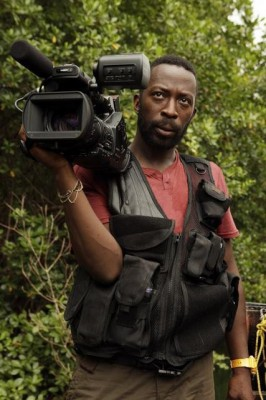

#2935 Tagebuch eines Skandals
Alternativ: Notes on a Scandal
Auszeichnungen: für 4 Oscars nominiert

 IMDB-Wertung: 7.4 / 10
IMDB-Wertung: 7.4 / 10  Metascore: 73
Metascore: 73 
Als die attraktive, einfühlsame Lehrerin Sheba Hart neu an eine Londoner Schule kommt, erobert sie alle Herzen im Sturm. Auch die verbitterte Erzieherin Barbara Covett ist von ihr fasziniert. Zwischen den ungleichen Frauen entwickelt sich eine Freundschaft, die für Barbara bald zur Obsession wird. Als sie entdeckt, dass Sheba eine Affäre mit einem Schüler hat, mutiert sie zur eifersüchtigen und unberechenbaren Furie. Gnadenlos nutzt sie ihr Wissen aus, um sich immer mehr in Shebas Leben zu drängen - bis die Situation eskaliert...
Jahr: 2006
Dauer: 91 Minuten
FSK: 12
Land: England Studio: 20th Century Fox Home EntertainmentTonspuren: DTS - ,
Untertitel:
Auflösung: 1080p (1920x1040) Größe: 7833 MB
Genre: Thriller, Drama
Regisseur: Richard Eyre
Drehbuch: Patrick Marber, Zoë Heller
Soundtrack: Philip Glass
Darsteller:
 Judi Dench als Barbara Covett
Judi Dench als Barbara Covett Cate Blanchett als Sheba Hart
Cate Blanchett als Sheba Hart- Michael Maloney als Sandy Pabblem
 Joanna Scanlan als Sue Hodge
Joanna Scanlan als Sue Hodge-  Shaun Parkes als Bill Rumer
- Emma Kennedy als Linda
- Andrew Simpson als Steven Connolly
- Philip Davis als Brian Bangs
 Bill Nighy als Richard Hart
Bill Nighy als Richard Hart Juno Temple als Polly Hart
Juno Temple als Polly Hart- Julia McKenzie als Marjorie
 Adrian Scarborough als Martin
Adrian Scarborough als Martin- Jill Baker als Sheba's Mother
- Alice Bird als Saskia
- Benedict Taylor als Eddie
- Stephen Kennedy als Mr. Connolly
- Anne-Marie Duff als Annabel
- Tom Georgeson als Ted Mawson
- Syreeta Kumar als Gita
- Wendy Nottingham als Elaine Clifford
- Tameka Empson als Antonia Robinson
- Leon Skinner als Davis
- Max Lewis als Ben Hart
- Debra Gillett als Lorraine
- Barry McCarthy als Dave
- Diana Berriman als Marcia
- Miranda Pleasence als Eddie's Wife
- Jonathan Speer als Vet
- Derbhle Crotty als Mrs. Connolly
- Catherine Drew als Newsreader
- Alex Argenti als Christmas Shopper , uncredited
Datei: X:\2006(N-Z)\Tagebuch eines Skandals (2006, FSK12, 1920x1040).mkv seit 02.01.2016
Festplatte: HD 2005(G-Z)-2006(A-Z)
 Es gibt insgesamt 62 Filme in der Gruppe '2006(N-Z)'
Es gibt insgesamt 62 Filme in der Gruppe '2006(N-Z)'